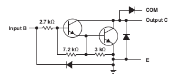

Switches/Relays¶
I use 16 relays which are isolated by optocouplers. Although it might be possible to drive those 16 LEDs directly from the built-in Raspberry GPIOs, I wouldn’t recommend that because there is a current limit of 50mA on the 3.3V rail 1. That is easily exceeded in the worst case - where all 16 LEDs are on. One needs to use a transistor of some form.
Another problem to solve is which of the Raspberry GPIOs to use to drive the outputs. Much bigger of a problem though is the lack of understanding of low-level electronic facts and consequences; see further down below for a bookmark list.
Contents
Sainsmart 8 Channel 5V Relay Board¶
To switch water pumps and oil burners, big fat relays are used. Sainsmart has arrays of 8 opto-isolated relays, cheap and easy to use.
8 channel isolated relay board from Sainsmart¶
Note
Driving the relays from the Rasperry’s 5V rail is tempting, but you’ll blow a fuse sooner or later (I had that) if you switch a couple of them at once. Give it a separate 5V supply!
Schematic of one channel out of eight.¶
ULN2803A Darlington Transistor Array¶
In my early days of making I used an array of 16 BC548C NPN transistors, together
with the obligatory resistors at the base. This made a huge breadboard
footprint (not to speak of soldering on the future PCB), so I decided
to go with a more integrated solution: ULN2803A (PDF).
The chip consists of an array of eight Darlington Transistors, and provides all I need (including clamp diodes that I don’t need):
Look, no resistors: all in one!¶
Simply connect the ULN2803A IN<n> pins directly to designated
Raspi GPIOs (see below), and the ULN2803A OUT<n> pins to the
Sainsmart IN<m> connectors.
Raspberry GPIO Usage¶
Not being an electronic engineer, I was having a hard time to figure out which of the Raspberry’s GPIOs were usable and which were not. Still hoping that I’ll learn that craft someday 2; that could be fun.
What’s important is the power-on reset (POR) state - the configuration that is applied to the pins right after power-on, before software can configure anything.
First off, the POR direction of all pins is input. What’s more important is the pullup/down POR state. Some of the GPIOs are configured as pullup at POR, and others are configured as pulldown. See BCM2835 ARM Peripherals , “6.2 Alternative Function Assignments” (100ff) for an extensive listing describing which is configured as what (you may want to look at the more approachable elinux page).
It turns out that it’s exactly the GPIOs whose POR pull state is pullup are not stable - this is they are not consistently able to lighten the optocoupler LED enough to switch the relay on the other side. This makes some sense to a layman (/me); if you look at what’s inside the ULN2803A,
one can imagine that having a pullup of 50K (the Raspi internal value) fight against the resistors does no good.
Sure, it would help if I could unconfigure the pullup. Sure, this would be possible with RPi.GPIO - but that library is Raspberry specific. Much like hardware engineers have a codex, a software engineers (/me) has one too, so: no! 3.
Long Story Short: GPIO/Relay Mapping¶
Relays numbered 0 through 15, spanning both Sainsmart boards (with ULN2803A sitting in between appropriately):
Raspi GPIO |
Relay |
|---|---|
17 |
0 |
27 |
1 |
22 |
2 |
10 |
3 |
9 |
4 |
11 |
5 |
13 |
6 |
19 |
7 |
18 |
8 |
23 |
9 |
24 |
10 |
25 |
11 |
12 |
12 |
16 |
13 |
20 |
14 |
21 |
15 |
Miscellaneous¶
Using MCP23017¶
MCP23017 is a I2C/SPI IO expander. It can drive more current than pure Raspi GPIOs can; I had a couple of them lying around so I gave it a try. Easily attached (see for example http://www.faschingbauer.co.at/de/howtos/gpio-mcp23017/, but dont forget to connect RESET to 3V3 :-) )
Issues:
(using
gpiod) closing the chip file-descriptor does not reset pins to their POR state. (This is likely the driver’s fault.) Unusable: a crashing process might leave a pump running. Or, even worse, the oil burner.CPU reset does not propagate to MCP23017. Unusable: a hard reboot (one that does not terminate processes) would leave … running.
Footnotes
- 1
See here. The information is a bit hard to come by; there’s a section “Power Pins” where it says, “The maximum permitted current draw from the 3.3 V pins is 50 mA.”
- 2
Fortunately I know how to do software; doing a software project and not knowing what that is is much more severe.
- 3
Openheating uses the new GPIO userspace interface of the kernel, through an accompanying userspace library, libgpiod.